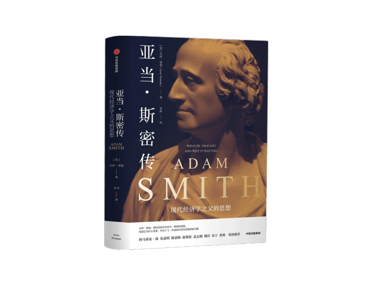

收录于合集
溯源启蒙思想，破局现代经济学迷思
回顾现代社会政治经济本源
阿马蒂亚·森、朱嘉明、陈嘉映、赵鼎新、袁志刚、姚洋、朱宁、香帅
重磅推荐

《亚当·斯密传：现代经济学之父的思想》
上市时间：2021年2月
定价：88.00元
杰西·诺曼（Jesse Norman）著
李烨 译
ISBN：978-7-5217-2482-0
编辑推荐
1.破除对亚当·斯密的信仰与迷思，真实全面地回溯讲解现代经济学之父的思想与影响。
2.超越一般性的学术讨论，来自英国学者型政治家的创新视角，弥合左右派别的对立观点。
3.提供基于实践的真知灼见，应用亚当·斯密式的思考方式解答现实的政治经济难题。
作者介绍
杰西·诺曼（Jesse Norman）
英国国会议员，伦敦大学哲学博士、名誉院士，英国国家经济社会研究院理事，牛津大学万灵学院访问学者，曾在巴克莱银行任职。著有《埃德蒙•柏克:现代保守政治教父》等书。
内容介绍
亚当·斯密被誉为“现代经济学之父”，但世人对他的思想及其影响仍然存在巨大争议。他是言辞犀利的资本主义和个人自由的鼓吹者吗？他是市场原教旨主义的推动者，是不平等和个人私利的辩护人吗？他的立场到底如何？我们需要认识到，亚当·斯密的思想不仅限于经济学领域，杰西·诺曼在这本书中对其整个思想体系进行了全面呈现。基于苏格兰启蒙运动动荡的历史背景，这本书简洁又深入地描绘了斯密的生平及其时代，整体性地回顾了他所有的著作，及其思想对后来两个世纪的深远影响。
这本书并不仅仅是一本传记，它还致力于破除长久以来围绕亚当·斯密的迷思和肤浅的刻板印象。作者细致入微地探讨了斯密在道德、法律、经济、政府等方面的思想，并延伸论述了这一思想体系对一系列知名思想家的影响，例如我们所熟知的马克思、达尔文、凯恩斯、哈耶克等。因此，斯密远不只是一个经济学家，他还是现代社会心理学和行为经济学的奠基人，他也绝非一个奉“自由主义”或“新自由主义”为圭臬的教条主义者，他的政治经济学及其对市场和政府的理解都非常接近当代的思想家。
今天，我们处在一个经济和政治在左右之间摇摆，越发两级分化的时代。作者试图把斯密式的分析应用于当代市场、掠夺式的资本主义，以及2008年的金融危机，引领读者追根溯源，试图使当今失焦的公共讨论重新找到原点。通过讨论斯密的著作，作者重申了不平等、人类尊严、剥削等关键问题的重要性，并有力地证明了，对任何试图维护、改革，或者更新市场体系的尝试来说，斯密的思想至今仍发挥着不可忽视的关键作用。
专家推荐
在这本精彩的书中，杰西·诺曼不仅出色地介绍了亚当·斯密的生平和思想，也解释了斯密的思想为什么仍然有助于解决当代世界面临的一系列重要的社会和经济难题。斯密喜欢清晰和相关性强的讨论，我想若他在世他会很喜欢诺曼的书。
——阿马蒂亚·森
诺贝尔经济学奖得主
亚当·斯密的思想遗产丰富而宏大，而过去的两个世纪里，一代一代学者、经济学家、政治家、意识形态评论者、经济学爱好者却不断按各自的价值观和立场解读他的思想，甚至不惜对其实行机会主义和实用主义的曲解。这本书使我们能够拨开迷雾，重新认识亚当·斯密不朽而鲜活的思想。可以预见，对亚当·斯密思想的研究会继续下去，亚当·斯密的影响也会继续下去。
——朱嘉明
经济学教授、数字资产研究院学术与技术委员会主席
这本书的特点是在“人的科学”的总体关照下融通理解《道德情操论》和《国富论》这两部看似矛盾的皇皇巨著，大大有助于消除对“看不见的手”等著名斯密论题的广泛误解。
——陈嘉映
首都师范大学哲学系特聘教授
亚当·斯密是自由主义者，但却不是带着自由帝国主义倾向的自由主义者。他从不远离经验观察和共情式的理解，他给我们留下了一套与当代社会科学高度契合的分析方法和一些具有较大普遍意义的社会规律，而不是一些从观念出发、看上去精深高妙但却容易把社会引入歧途的理论。对当今中国的知识分子来说，斯密的思想和治学态度无疑是一剂良药。
——赵鼎新
芝加哥大学社会学系
麦克斯·派里维斯基（Max Palevsky）讲席教授
人类社会由农业社会向商业社会的大转型孕育了思想巨人亚当·斯密。250年来，后人出于各种目的将亚当·斯密标签化、偶像化，而本书穿过时间的迷雾，真实地追溯了亚当·斯密的思想，全面展示了其在政治经济学、社会学与伦理学等领域的洞见，在今天“百年未有之大变局”之际，这本书有助于我们审视时代变迁的脉搏，在经济学中重新找回政治学、社会学与伦理学的传统，找回经济学研究的初心！
——袁志刚
复旦大学经济学院教授
无论以什么标准而言，亚当·斯密的一生都可以用平静来形容。但他的思想穿透世纪，照亮人类的社会和经济生活，既让我们理解了资源配置的机制，也让我们看到了道德情操的光辉。
——姚洋
北京大学国家发展研究院院长
作为为数不多被称为哲学家的经济学家，亚当·斯密在现代经济学中的奠基作用不言而喻，而他对经济与社会的关系，宏观经济与微观个体的联系，理性行为与道德情操的轻重，公平与效率的权衡等诸多矛盾的思考，时至今日仍然闪耀着智慧的光辉。
——朱宁
上海交通大学上海高级金融学院副院长
过去两三百年的经济学子，无论中外，多少都受到亚当·斯密的影响。“分工”和“市场”两个词，几乎将工业时代增长的秘密说尽了。之后所有经济学流派，无论偏左或偏右，偏自由或偏管制，都无法脱离这个“第一性”的框架。2008—2020年，从金融危机到新冠疫情，全球增长放缓，技术进步和金融深化加快社会分化，世界正进入一个水流湍急的峡谷地带，关于公平和分配的议题越来越成为焦点。在这个时间节点上重读亚当·斯密，可能会更有意义。
——香帅（本名:唐涯）
知名金融学者、香帅数字金融工作室创始人
著有《香帅金融学讲义》《钱从哪里来》等
可读性很高……诺曼很好地将亚当·斯密的思想应用到许多现代挑战中。总而言之，他从未忘记斯密思想中隐含的训诫:要从更广泛的角度思考问题，而不仅仅是从经济学角度。
——《福布斯》杂志
一本适合大众读者阅读的充满智慧的书……如果你想超越左派和右派的陈词滥调，阅读迷人的、充满智慧和学识的内容，你会想要阅读诺曼先生描写的亚当·斯密。
——《华尔街日报》
引人注目，极具可读性……诺曼是一个保守派的议员，他基于哲学研究的背景写成了这本书，同时展现了广博的经济学知识，和18世纪爱丁堡的启蒙运动历史，有力反驳了那些声称知识分子已经从政界消失的声音，表现了对事实的尊重和对现实的接触。
——英国《金融时报》
对无数与亚当·斯密相关的著述和现代的保守主义思想来说，本书是一个非常有价值的补充。
——《科克斯书评》
目录
序 一 亚当·斯密的思想遗产永不枯竭 朱嘉明 III
序 二 亚当·斯密对现代社会的深刻影响 袁志刚 XXI
引言 III
第一部分 生平
第一章 柯科迪男孩 1723—1746年
第二章 “我生命中最有用、最快乐、最光荣的时期” 1746—1759年
第三章 启蒙时代的插曲 1760—1773年
第四章 “你将在这个领域独领风骚” 1773—1776年
第五章 工作到最后 1776—1790年
第二部分 思想
第六章 荣誉、事实和迷思
第七章 亚当·斯密的经济学
第八章 亚当·斯密与市场
第三部分 影响
第九章 资本主义的不足
第十章 商业社会的道德基础
结 语 亚当·斯密的重要意义
致谢
注释
精彩书摘
引言
亚当，亚当，亚当·斯密，
听好了，我对你的指控！
你不是说过，
在课堂上的某一天，
自私必然要付出代价？
那是所有教义的精髓所在，
是吗，是吗，是吗，斯密？
—斯蒂芬·李科克
今天我们提到亚当·斯密，常常会引起人们完全对立的反应。特别是自20世纪80年代以来，亚当·斯密一直是关于经济学、市场和社会的不同观点的竞争焦点和意识形态战场的中心。对许多政治右派来说，他是现代社会的奠基人，在一个充斥着乌托邦幻想的世界里， 他是最伟大的经济学家，是个人自由的雄辩家，是国家干预的坚定敌人。对许多左派人士来说，他的地位截然不同，他是市场原教旨主义的始作俑者，是活动家和作家娜奥米·克莱因所说的“当代资本主义教科书”的作者，是席卷全球的唯物主义意识形态的主要推动者， 是财富和不平等以及人类自私的辩护者，而且他还是一个厌恶女性的人。
但有一点是肯定的，在一个经济学家和经济学的影响力越来越大的时代，亚当·斯密被认为是迄今为止最有影响力的经济学家。在2011年对299位经济学家的随机调查中，亚当·斯密以巨大的优势位居影响力排行榜第一位，他被引用了221次，而凯恩斯是134次，其余学者均在其后。亚当·斯密的学术声誉也不限于经济学家：对英文期刊数据库JStor上1930—2005 年的参考文献进行的详细研究表明，亚当·斯密是迄今为止被引用最多的经济学大师。根据最新数据，亚当·斯密的被引用总量比马克思、马歇尔和凯恩斯加在一起还要高，是被引用量最高的现代经济学家的三倍多。
亚当·斯密的影响力因其思想的广泛性而被放大。在经济学之外的领域，过去200年里，在哲学、政治学、社会学等领域中，许多著名思想家的观点都在一定程度上带有他的印记，包括伯克、康德、黑格尔、马克思、韦伯、哈耶克、帕森斯、罗尔斯、哈贝马斯以及最近的阿马蒂亚·森。斯密提出的良好税收的四原则成了全世界税收制度的基础。他的名言“看不见的手”在演讲厅和媒体评论版上随处可见。他有一个专门的研究所、一本同行评议杂志，世界各地还有许多以他名字命名的学会。在普希金笔下，叶甫盖尼·奥涅金也研究过他。他的脸还印在英国20英镑纸币的正面，面无表情地盯着我们。
除了崇拜和诋毁，同时也出现了另一种普遍的倾向，即把亚当·斯密视为一个吉祥物，利用他无与伦比的威望来推销自己的意识形态。的确，亚当·斯密的思想以及他的名声是如此强大，以至于各派政治领袖都想利用他作为支持者。玛格丽特·撒切尔在1988年的苏格兰保守党会议上曾以挑衅的态度说：“有人告诉我苏格兰人不喜欢撒切尔主义……我觉得非常不可思议，因为苏格兰人早在我之前就发明了撒切尔主义。”她将自己的政治信仰追溯到亚当·斯密、弗格森和休谟的作品中，并说道：“财富将被创造出来并使更多人受益”，“明智的政府选择袖手旁观，充分利用个人的努力来改善整个社会的 福祉”。
而作为工党成员，英国前首相戈登·布朗更胜一筹，他与亚当·斯密的出生地一样，都是法夫郡的柯科迪，布朗通过这一关联将自己与斯密联系起来。2005年，作为英国财政大臣，布朗邀请时任美国联邦储备委员会主席，后来成为他的经济顾问之一的艾伦·格林斯潘在柯科迪举办关于亚当·斯密的演讲，格林斯潘在演讲中说：“在一定程度上，财政大臣了不起的经济和金融能力，受到了这块人杰地灵的土地的潜在影响。”在同一年晚些时候，布朗在雨果·扬的纪念演讲中宣称：“我和亚当·斯密一样来自柯科迪，我已经认识到他的《国富论》是以他的《道德情操论》为基础的，他的‘看不见的手’有赖于援助之手的存在。”
正如这些例子显示的，亚当·斯密的思想是如此丰富，如此多面，如此耐人寻味，以至于诱使人们过度解释或直接挪用他的思想。事实上，如果将语境引申到极致，甚至可以说他已经对一系列当代事件做出了预测。其中之一就是名人政治的兴起，这源于现代科技与人类崇拜富人和权贵的倾向的相互作用，以及人类相互同情的能力，斯密在《道德情操论》中讨论了这两个观点。另一个是英国脱欧的逻辑。毕竟，斯密在谈到美洲殖民地时认为，英国面临着一个明确的选择：要么完全脱离出来，要么组成一个帝国联盟，如果选择后者，其主权以及政府所在地，在适当的时候都会慢慢转移到美国，等等。
最终，人们创造了一个被称为“亚当·斯密”的夸张形象，围绕它编织了一个庞大的神话体系。这些神话与亚当·斯密很少有关联， 但与我们自己不断变化的问题非常相关。我们可以在长期的诠释中看到同样的模式。因此，如果我们通过19世纪和20世纪对自由贸易的关注视角，以及将经济学视作一门专业的数学学科的视角来看待斯密，那么结果就是突出了“经济的斯密”，即以《国富论》为代表作的斯密，却可能把“政治的斯密”和“道德的斯密”排挤到了一边。就政治而言，他在《国富论》和未发表的《法理学讲义》中探讨了权力、财产和政府如何共同发展，以及商业社会的性质和影响；就道德而言，他在《道德情操论》中提出了关于道德和社会规范如何由人类社会创造和维持的惊人的现代化论述。本书的部分意义就在于重申斯密的思想体系中这些被忽略的内容，使其呈现出一个更全面的图景—不仅介绍亚当·斯密的经济学理论，还介绍他更广泛的知识体系。
甚至有很多经济学家，也投入了这种选择性解释的热潮。芝加哥学派经济学家雅各布·维纳曾这样评论《国富论》：“在那本无所不包的书中，人们能想到的每一种学说都能在其中找到痕迹，一个经济学家如果不能够引用或者故意不引用《国富论》来支持他的论题，那他一定有很特殊的理论。”事实确实如此。
维纳最著名的学生的一个例子就足以说明这个问题。1977年，米尔顿·弗里德曼为知名财经杂志《挑战》（Challenge）撰写了一篇著名的文章，他在前一年刚刚获得诺贝尔奖，他承诺要阐明“亚当·斯密与今天的相关性”。对弗里德曼来说，亚当·斯密在他自己的时代是“激进的、革命的”，就像弗里德曼在自己的时代一样。在弗里德曼看来，斯密认为他所处的社会被“过度治理”，所以他反对国家干预，就像弗里德曼在自己的时代一样。斯密“看不见的手”的学说反映了他的观点，即人类的同情心是不可靠的、有限的，需要节约的，而自由市场则会给人类带来福祉，这正如弗里德曼的观点，在漫长的职业生涯中，他一直致力于阐述类似的观点。
然而，在提出这些基本命题之后，弗里德曼发现自己遇到了一些困难。他解释说，确实，亚当·斯密还说过各种与上述立场相冲突的话：他曾为利率上限辩护，并支持政府建立和维护某些公共工程和公共机构（可能包括道路、桥梁和运河），并承担建立学校的义务。但他认为这些言论都不是严重缺陷，对整体来说，瑕不掩瑜。
新自由主义学术团体协会朝圣山学社发表过这篇论文，现在看来，这是一篇通俗文章，而不是学术文章。它反对20世纪70年代末美国经济出现“硬化症”的观点。作为一个调整事实以适应某一理论的案例研究，这篇文章可是相当出色。因为弗里德曼的很多描述都有些离谱。事实上，亚当·斯密不是激进派，也不认为自己是激进派；他似乎并不相信他所处的社会是“过度治理”的（也许除了美洲殖民地之外），不管这意味着什么；他也没有把“看不见的手”发展成学说，事实上他也没有提出关于市场如何运作的单一理论；他不认为自由市场总是为人类的福祉服务；他也不认为人类的同情心在本质上是有限的或需要节省。
本书的主题是关于亚当·斯密在这些问题和一些其他问题上到底是怎么想的，以及为什么他的思想仍然具有深刻的意义。更重要的目的是戳破迷思，建立亚当·斯密整个思想体系的联系，包括其对哈耶克、凯恩斯和马克思等不同经济思想家的影响。但即使在坟墓里，斯密也不会让传记作者轻松，他的一生是献给学术的平淡无奇的一生， 在他去世前，他指示他极不情愿的遗嘱执行人烧掉了他几乎所有的手稿，关于手稿的内容我们只能凭空猜测。斯密的《法理学讲义》是他思想中经常被忽视但又至关重要的内容，之所以能够留存，也是运气使然。
亚当·斯密思想中许多深刻的内容都与他最亲密的朋友大卫·休谟有关系。在很多方面，他们是一对不同寻常的朋友。休谟比斯密大12岁，他世故、开朗、机智，爱讲闲话、开玩笑和讥讽，喜欢打牌， 喜欢美食和卖弄风情。相比之下，斯密矜持、内向、深思熟虑，在公开场合往往相当严谨，不过他在私下也能放松。休谟是斯密最亲密的对话者，远超任何其他思想家；尽管他们在理念上并未建立真正的哲学联系，但在斯密的作品中，即便有许多不能说是直接受到休谟的影响，人们也总是能从中感觉到休谟思想的影子。尽管两人的分歧点很多，但称斯密为休谟的弟子也不为过。
按照当时的标准，亚当·斯密的观点基本上是一个辉格派，这个词意味着对君主立宪制、宗教宽容和个人自由等美德的信仰。但斯密一生对个人政治观点讳莫如深。他从未结婚，也没有孩子。据我们所知，他没有秘密的爱情，没有不为人知的恶习，大学时期没搞过恶作剧，成年后也没什么不当行为。当谈到有趣的私人生活，斯密的私生活就如同干燥无趣的撒哈拉沙漠。用他的第一本传记作者杜格尔德·斯图尔特的话来说，斯密“似乎不希望为他的传记作者留下任何材料，他只想让人看见代表他天才的不朽的纪念碑，以及他堪称典范的私人生活”。
尽管情况不乐观，但斯密并不缺少传记作者。近年来，他极受青睐，除了不断扩充的学术文献外，还有一些作品煞费苦心地整理了他的生活细节，在爱丁堡的知识背景和苏格兰启蒙运动的思想背景下，这些作品生动地将其生活重新呈现在大众面前，并详细探讨了他的知识和兴趣的各种细节。我怀着极大的感激之情从这些作品中自由地汲取灵感。
本书不可避免地包括很多重复的内容。当然，书中的内容也不免有我自己的成见，尽管我已经尽可能地保持内容的平衡和公正，但也很难摆脱知识的片面性和视角的局限性等一般缺陷，我欢迎读者对这些缺陷进行纠正和提出意见。本书与前辈们的著述有三点不同之处。第一，本书不是由一位专业研究亚当·斯密的学者写的，而是由一位在职的政治家写的，一位具有哲学学术背景的政治家，也就是说，是由一位实际上与政治经济打交道，并且试图理解和解释政治经济学现代性质的人写的，所以本书既具有理论性，又富有实践性。第二，我希望本书不仅能让读者领会亚当·斯密的思想，而且还能让读者领会这些思想在一个非常广泛的跨度中是如何相互运作、配合，自成体系的。第三，本书对亚当·斯密思想的重要性和持续的相关性进行了具体的、切中要害（我希望是）的论证。
巧合的是，亚当·斯密和伟大的爱尔兰哲学家、政治家埃德蒙·伯克是好朋友，我在2013 年出版的一本书《埃德蒙·伯克：现代保守政治教父》正是以伯克的生平为主题。斯密和伯克互相钦佩，他们在思想上有许多重合之处，也有许多不同之处。据说斯密曾经说过：“伯克是我认识的唯一一个在经济问题上与我的思想完全一致的人，而且我们此前没有任何交流。”他们两人共同标志着世界历史上一个不平凡的时刻，在这个时刻，现代的政治和经济轮廓首次显现，被深入分析并给予公开解释。伯克是讨论现代政党和代议制政府的第一位伟大理论家。斯密是第一个把市场概念置入政治经济学和经济学的中心，并将规范的概念置于社会学中心的思想家。伯克是我们通向政治现代性的枢纽，斯密则是我们通向经济现代性和社会现代性的枢纽。这些都是重大的成就。
但斯密和伯克一样，他不仅仅是一个历史人物，本书也不仅仅是一本传记。斯密的思想和他的影响力，到今天仍然鲜活。在当今世界，无论是发达国家还是发展中国家，都面临着巨大的挑战，这些挑战包括但绝不限于：如何推动和维持经济增长，如何处理全球化和不断升级的不平等问题，如何在具有不同的历史、利益和信仰的共同体之间建立道德理解。斯密的思想中蕴含的野心和智慧，其中体现的简洁性和广阔程度，到今天仍然让我们惊叹不已。这些思想对我们应对这些挑战的任何尝试来说都是至关重要的，需要得到广泛和充分的理解。我们不仅要认识亚当·斯密的思想，还要知道它为什么重要，并为了下一代，找到应用其思想的新的可能。
编辑：张天一